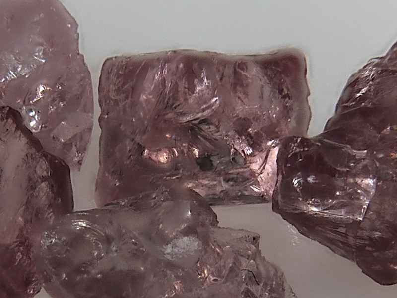

How it works
Alignment and fusion
What happens to the frames between the folder and the finished image, and what each setting changes.
01Linear light
Camera files store gamma-encoded sRGB values. z-stackr decodes every frame to
linear light with exact lookup tables for 8-bit and 16-bit sources and keeps
it as three f32 planes: a luma plane and two chroma planes
(BT.601 weights on linear RGB). Alignment, focus measures, pyramids and
blends all work on these planes; only the final image is encoded back to sRGB,
with correct rounding, so linear white is exactly 255 at 8 bits and 65 535
at 16 bits.
When a frame is read, its EXIF orientation is applied (JPEG only, unless
switched off), then the optional rotation, crop and resize from the
preprocessing settings. Alpha is dropped and no color profile is applied.
In builds with the raw feature (desktop and command line),
camera RAW files (CR2, CR3, NEF, ARW, DNG, RAF, ORF, RW2, PEF and others) are
read too, developed with the camera's white balance and color matrix. With
Copy metadata on, the EXIF block of the first frame is copied into a
JPEG or PNG result, with the orientation set upright because the pixels were
already turned; a TIFF cannot carry it.
02Alignment
As the focus moves, the picture changes in size (focus breathing), and a hand-held or rail-mounted series also shifts and turns a little. Every frame is therefore registered to the first one with a transform fitted to its pixels. How many parameters it may use is the alignment mode.
| Mode | Fits | Use it for |
|---|---|---|
translation | shift and one uniform scale (3 parameters) | a tripod or a rail, where the only change is focus breathing |
registration | shift, scale and rotation (4 parameters, a similarity transform) | most series; the default |
affine | the full 6 parameters: adds aspect (unequal scale in x and y) and shear | a lens or rail that changes the proportions from frame to frame; always searched within a band around the starting estimate: 20 % for each shift and the scale, 20° for the rotation, 10 % for aspect and shear (narrower with bounded search) |
none | nothing | frames that are already registered |
The search is intensity based: it minimises the RMS difference between the frame's luma and the warped reference luma, counting only the pixels the warp can sample (a candidate that sees less than half the frame is rejected). It runs coarse to fine over a luma pyramid and the result is sub-pixel.
- Optimizer
auto(the default) runs Lucas-Kanade, a Gauss-Newton solver that is fast and needs a good starting point, and falls back to a Nelder-Mead simplex from the same start when it fails or ends no better.lucaskanadeandneldermeadforce one of the two. Lucas-Kanade runs on the CPU; the browser version always uses the simplex.- Nelder-Mead schedule
- The simplex skips the full-resolution level at first, spends 150 iterations on each coarse level and 3 on the large levels near full resolution, restarts ten times at the coarsest level, and finishes with a short polish (40 iterations) at full resolution.
- Bounded search
- Keeps each parameter inside a narrow band around the starting estimate (5 % of the image size for each shift, 5 % for the scale, 5° for the rotation, where the default search allows 20 %, 20 % and 20°) by searching in logit space, so the simplex can never drift into a degenerate transform.
- AKAZE seeding
- In builds with the
akazefeature, first matches image features and fits a starting transform with RANSAC (at least a fifth of the matches must agree). It helps on textured subjects with large shifts and is off by default, because feature detectors struggle on glossy or featureless ones. A seed that is not plausible is discarded. - Identity gate
- A refined transform that fits strictly worse than no transform at all, judged on a reduced copy of the frames, is replaced by the identity.
- Chain alignment
- Off by default. Registers every frame to its aligned predecessor instead of to the first frame and composes the steps. It helps long series whose end frames share little with the reference, at the price of some accumulated drift. The coverage mask comes from the composed transform.
Brightness correction (on by default) matches every aligned frame to the reference in linear light, with a scale and a mild gamma fitted to the mean and the spread of the pixels both frames cover. A flicker or an auto-exposure step therefore does not reach the fusion. Switch it off for a series shot at deliberately different exposures.
After warping, each frame has a black border where it has no data. With Crop to common area (on by default) the result is cropped to the largest rectangle that every frame covers. If that rectangle would be smaller than half the frame, nothing is cropped and the app names the frame that covers least. With it off, the full canvas is kept and the border shows the nearest edge pixels. Resize cropped to original (off by default) stretches a cropped result back to the original size, which changes the proportions very slightly; the command-line tool keeps the cropped size.
Settings files from before the modes changed their meaning are migrated when
read: the old affine becomes registration, and the
old single-pass registration becomes registration
with bounded search. The old fusion names PMax and DMap, and the
dmap_* keys, are still accepted when reading; everything that is
saved uses the current names.
03Auto-cull and frame order
Deep series often contain frames that add nothing: the plane of focus is in
empty background, or two frames are almost the same. With
Auto-Cull Frames on (the default), every frame is scored
with a focus map, and each pixel with real detail is won by the frame that is
sharpest there. A frame is dropped when it wins less than
min(2, 50 / N) percent of those pixels, where N is
the number of frames: 2 % for stacks of up to 25 frames, half of the
average share for deeper ones, so a deep stack keeps its frames. If every
frame would be dropped, all are kept.
auto_cull_threshold_pct (0 to 50) replaces that rule with a fixed
share: a frame must win at least that percentage of the detail pixels. At 0,
the default, the automatic rule applies.
The kept frames are fused in capture order, which the Relief multigrid solver
needs. With sort_by_sharpness on they are ordered by the same
census instead, by walking from the centre of one frame's sharp area to the
nearest next one, and the sharpest frame becomes the alignment reference.
Dropped frames are never removed from your file list; the app shows them
dimmed and marked culled. Its Sort and
Cull buttons run the census alone, without a stack: Sort
reorders the list sharpest-first, Cull marks the frames below the threshold.
04Fusion: Apex
Apex builds a Laplacian pyramid for every frame: a stack of band-pass images, from the finest detail down to a small base. In every detail band, each pixel takes the coefficient of the frame with the most energy there (the squared coefficient), and the base is the average of all frames. Collapsing the fused pyramid gives the result.
- Pyramid levels
- 2 to 12, default 8. More levels reach larger structures and cost time.
- Grit suppression
- On by default. In the finest band the winner is chosen by the energy of the 3×3 neighbourhood instead of the pixel alone, so an isolated noisy speck is less likely to win. Nothing is smoothed.
- Use all color channels
- Off by default. Lets the chroma bands vote on which frame is sharpest. Luma and color are still copied together from one frame.
Apex keeps fine detail where structures at different depths cross, such as hairs and bristles. It can raise the apparent noise in out-of-focus background. The frames are folded in one at a time, so its memory does not grow with the number of frames.
05Fusion: Relief
Relief scores every pixel of every frame with a focus measure: in a window around the pixel, a plane is fitted to the luma by least squares, and the variance the plane does not explain is the sharpness. A flat area and a smooth ramp both score zero, so a gradient is not mistaken for detail.
Where the best score any frame reaches is at or above a threshold, the pixel comes from that frame; elsewhere it is the mean of all frames, which keeps empty background clean. The luma of the result is then smoothed with an edge-preserving guided filter that follows the image's own edges; the color planes are not filtered.
- Estimation radius
- 0 to 100, default 5: the size of the focus window. Larger is smoother but less precise.
- Smoothing radius
- 0 to 50, default 2: the window of the guided filter.
- Contrast threshold
- The fraction of pixels, ranked by their best focus score, that take the mean instead of one frame. Evaluated once on the whole image, so a tiled run has no seams.
- Auto-detect
- Chooses the threshold as the median of the non-zero focus scores plus 1.5 times their median absolute deviation. Otsu's method, used by earlier versions, collapses on the long tail of a focus map.
- Multigrid depth solver
relief_use_multigrid, off by default. See below.
Relief gives smooth, low-noise backgrounds and is weaker than Apex on complex, interlocking shapes. The desktop app can pause a Relief run on a preview of the mask so you can set the threshold by eye (see the desktop app).
Multigrid depth solver
The default Relief takes each pixel from the one frame with the best score, so neighbouring pixels can jump between frames. With the multigrid solver on, the index of the winning frame is instead solved as a smooth depth surface over the whole image: the winning index is pinned where the focus is reliable, and a multigrid method (restrict, prolong and relax over a hierarchy of coarser grids) fills in the rest. A pixel between two frames then blends both. Use it for continuous surfaces such as coins or flat mineral samples, where the depth changes gradually; leave it off for subjects with many separate depths, such as hairs. It needs more memory and time than the default, and it needs the frames in capture order (so no sort by sharpness).
The solver works on whole-image planes of the winning frame and the best score (about 6 bytes per pixel), not on the frames, so a tiled run gives the same result for every tile size and has no seams.


06Fusion: Strata
Apex and Relief both pick: at each pixel, or in each band, one frame wins. Strata blends instead. Every frame contributes to every pixel, weighted by how sharp it is there, and the weights follow the edges of the picture.
- Saliency. Each frame is rated by the magnitude of the Laplacian of its luma, blurred over five passes. A running argmax keeps, for every pixel, the index of the sharpest frame (a tie goes to the earlier one). That gives a binary winner mask for each frame.
- Base and detail. Every frame is split with a box blur into a smooth base layer and a detail layer (the frame minus its base).
- Guided weights. Each frame's winner mask is refined with a guided filter that uses the frame's own luma as the guide, so a weight changes at an edge in the picture and not across it. The base weight is wide and smooth, which hands over brightness and color without seams; the detail weight is tight, so the handover is pixel accurate and detail is not doubled.
- Blend. The base and detail layers are averaged over all frames with their weights and added together. The weights come from luma only and are applied identically to the three planes, so the fusion cannot introduce color fringes.
- Base radius
- 8 to 64, default 31: the radius of the box blur that makes the base layer. A larger radius moves more of the picture into the detail layer.
- Detail focus
- 1 to 5, default 3: the exponent applied to the detail weight, which concentrates it on the sharpest frame. The filter leaks a small weight to the frames next to the winner, and on a deep stack the leaks of many defocused frames would dilute the sharp one. 1 is soft, 5 is close to winner-take-all.
Because every frame contributes, there are no hard switches between frames and the transitions follow edges. The price is two passes over the frames and about 150 bytes per pixel of working memory (Apex needs about 84), which does not grow with the number of frames. Apex is the one to try first where fine structures cross, and Relief where the background must be clean; the All Three algorithm fuses a series with all of them from one alignment so the results can be compared.

07Retouch
No fusion method is right everywhere. The desktop app's retouch brush paints pixels from one chosen source frame onto the result: a hard-edged circular dab that blends towards the source at the chosen opacity. Each drag is one undo step, and only the parts of the mask a stroke touched are stored, so the history stays small. Strokes are saved in the project and painted again on the next result.
08Images larger than memory
The command-line tool aligns one frame at a time and writes it to a scratch
folder as overlapping tiles. Fusion then reads one tile of every frame, fuses
it and pastes its interior into the output. The overlap (the apron) is as
wide as the method needs to see past the tile edge: 512 px for Apex at
the default 8 levels, 128 px at 6 levels, 101 px for Strata
whatever its settings, and only
estimation + 2 × smoothing + 1 pixels (10 at the defaults)
for Relief. A tiled result equals the whole-image result.
Strata holds a fixed working set per tile pixel (about 174 bytes) and reads its frames on demand, two at a time, never a tile of every frame. The Relief multigrid solver keeps its small whole-image planes, so it too gives the same result at every tile size. While one tile is fused, the next tile's frames are read on a second thread (prefetch; not for Strata), and the aligner decodes ahead of the frame it is working on; neither changes the result. The desktop app can use the same tiles: set Tile size in its settings to keep a stack that does not fit in memory on disk instead (see settings).